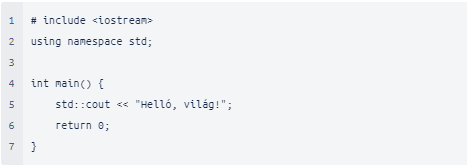

C++
Fedezd fel
A C++ egy általános célú, magas szintű programozási nyelv. Támogatja a procedurális, az objektumorientált és a generikus programozást, valamint az adatabsztrakciót. Napjainkban szinte minden operációs rendszer alá létezik C++ fordító. A nyelv a C programozási nyelv hatékonyságának megőrzése mellett törekszik a könnyebben megírható, karbantartható és újrahasznosítható kód írására, ez azonban sok kompromisszummal jár, erre utal, hogy általánosan elterjedt a mid-level minősítése is, bár szigorú értelemben véve egyértelműen magas szintű.
Bjarne Stroustrup kezdte el a C++ programozási nyelv fejlesztését a C programozási nyelv kiterjesztéseként. A nyelv első, nem kísérleti körülmények közt való használatára 1983-ban került sor, 1987-ben pedig nyilvánvalóvá vált, hogy a C++ szabványosítása elkerülhetetlen. Nevét Rick Mascitti találta ki. A C++ név kifejezi, hogy a nyelv a C kibővítése.
A kis- és nagybetűs angol ABC, általános írásjelek és a matematikai operátorok, jelek.
A nyelv bizonyos összetevőire (változók, konstansok, függvények stb.) névvel hivatkozunk. A legtöbb fordító csak az első 32 karaktert veszi figyelembe a nevekben. A név első karaktere betű vagy aláhúzásjel lehet, ettől kezdődően már számok is szerepelhetnek benne. Lehetőleg saját névként ne adjunk meg aláhúzásjellel kezdődő nevet, mert ezek a fordító számára vannak fenntartva. A C++ különbséget tesz a kis- és nagybetűk között (case-sensitive).
Az úgynevezett „Helló, világ!” programot először Brian Kernigham és Dennis Richie alkalmazta A C programozási nyelv című könyvükben példaprogramként. Mindössze annyit csinál, hogy a képernyőre írja az üdvözletet.

1. sor: #include iostream egy fejlécfájl-könyvtár , amely lehetővé teszi, hogy bemeneti és kimeneti objektumokkal dolgozzunk, például cout(az 5. sorban használt). A fejlécfájlok funkcionalitást adnak a C++ programokhoz.
2. sor: using namespace std azt jelenti, hogy használhatunk neveket a szabványos könyvtárból származó objektumokhoz és változókhoz.
4. sor: Egy másik dolog, ami mindig megjelenik a C++ programokban, az int main(). Ezt függvénynek nevezzük . A kapcsos zárójelben lévő kódok végrehajtásra kerülnek.
5.sor: cout egy objektum , amelyet a beszúrási operátorral ( ) együtt használnak a << szöveg kiadására/nyomtatására. Példánkban a „Hello World!” szöveget írja ki.
6. sor: return 0 befejezi a fő funkciót.